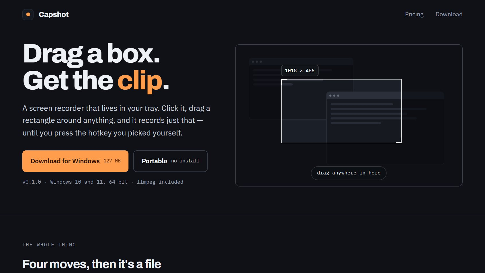

> WINDOWS SCREEN RECORDER
Capshot
LiveDrag a box around any part of the screen and record just that.
capshot.me
> ABOUT
Screen recorder that lives in the Windows tray. Click the icon, drag a rectangle around any part of any monitor, and it records just that region until you press a hotkey you chose yourself. Portable, with no installer and ffmpeg bundled. Free to use, unlocked by a one-time $11.49 payment rather than a subscription.
> BUILD & PRODUCT DECISIONS
- Region capture: Drag a box on any monitor. The screen dims, a live size readout follows the cursor, and Escape backs out without recording.
- System-wide hotkeys: Start and stop are bound to keys the user picks and work outside the app's own window, so a recording can be stopped without hunting for a button.
- Formats and capture: MP4, MOV, WebM, GIF and animated WebP, with device audio and pause and resume part-way through a take.
- Free tier is a tool, not a trial: No account and no countdown to expiry. The limits are stated plainly instead: 45 seconds a clip, 15 for GIFs, up to 1080p, and a small watermark.
- Offline licensing: One payment yields a key pasted into Settings. The app verifies it once and then keeps working without calling home.
- Platform support stated up front: Windows ships today; macOS and Linux are marked in progress. ChromeOS is a web version because an installed app there cannot see the rest of the screen, and would record a black rectangle. Said on the page rather than discovered after a download.